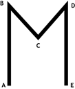

Axis Command
MOVE(distance1 [,distance2 [,distance3 [,distance4, …]]])
MO()
Incremental move. One axis or multiple axes move at the programmed speed and acceleration for a distance specified as an increment from the end of the last specified move. The first parameter in the list is sent to the BASE axis, the second to the next axis in the BASE array, and so on.
In the multi-axis form, the speed and acceleration employed for the movement are taken from the first axis in the BASE group. The speeds of each axis are controlled so as to make the resulting vector of the movement run at the SPEED setting.
Multi-axis interpolation uses the UNITS, SPEED, ACCEL and DECEL of the BASE axis. For correct XYZ vector operation, the UNITS of all 3 axes must be the same.
If an axis needs to be excluded in the vector speed calculation, then INTERP_FACTOR can be set to 0 for that axis.
Uninterpolated, unsynchronised multi-axis motion can be achieved by simply placing MOVE commands on each axis independently. If needed, the target axis for an individual MOVE can be specified using the AXIS command modifier. This overrides the BASE axis setting for one MOVE only.
The distance values specified are scaled using the unit conversion factor axis parameter; UNITS . Therefore if, for example, an axis has 400 encoder edges/mm and UNITS for that axis are 400, the command MOVE(12.5) would move 12.5 mm. When MERGE is set to ON , individual moves in the same axis group are merged together to make a continuous path movement.
If the number of axes in the move that follows on from the previous move are different, then they will not MERGE. Likewise, a FORWARD or REVERSE will not MERGE with a MOVE or MOVEABS.
|
distance1: |
distance to move on base axis from current position. |
|
distance2: |
distance to move on next axis in BASE array from current position. |
|
distance3: |
distance to move on next axis in BASE array from current position. |
|
distance4: |
distance to move on next axis in BASE array from current position. |
The maximum number of parameters is the number of axes available on the controller
A system is working with a unit conversion factor of 1 and has a 1000-line encoder. Note that a 1000-line encoder gives 4000 edges/turn.
MOVE(40000) 'Move 10 turns on the motor.
'Alternatively, use UNITS to calibrate the axis
UNITS = 4000 ' number of counts per turn.
MOVE(10)
Axes 3, 4 and 5 are to move independently (without interpolation). Each axis will move at its own programmed SPEED , ACCEL and DECEL etc.
'setup axis speed and enable
BASE(3)
SPEED = 5000
ACCEL = 100000
DECEL = 150000
SERVO = ON
BASE(4)
SPEED = 5000
ACCEL = 150000
DECEL = 560000
SERVO = ON
BASE(5)
SPEED = 2000
ACCEL = 320000
DECEL = 352000
SERVO = ON
WDOG=ON
MOVE(10) AXIS(5) 'start moves
MOVE(10) AXIS(4)
MOVE(10) AXIS(3)
WAIT IDLE AXIS(5) 'wait for moves to finish
WAIT IDLE AXIS(4)
WAIT IDLE AXIS(3)
An X-Y plotter can write text at any position within its working envelope. Individual characters are defined as a sequence of moves relative to a start point so that the same commands may be used regardless of the plot origin. The command subroutine for the letter ‘M’ might be:

write_m:
MOVE(0, 12) 'Move A > B
MOVE(3, -6) 'Move B > C
MOVE(3, 6) 'Move C > D
MOVE(0, -12) 'Move D > E
RETURN
Axes 1, 6 and 7 are to move together. The SPEED setting on the BASE axis is to be the speed of axis 1. The other 2 axes will run at speeds that will make all 3 axes stop at the same time. The accelerations and decelerations of axes 6 and 7 will be proportional to the axis 1 values.
'setup axis speed and enable
INTERP_FACTOR AXIS(1) = 1
INTERP_FACTOR AXIS(6) = 0
INTERP_FACTOR AXIS(7) = 0
BASE(1, 6, 7)
SPEED = 70 'mm / second
ACCEL = 350 '0.2 second ramp
DECEL = 700 '0.1 second ramp
MOVE(199.5, 81.53, 120) 'start moves
WAIT IDLE 'wait for moves to end
All the axes will finish their moves in 3.0 seconds. The constant speed part is 189 mm on axis 1 and takes 2.7 seconds.
MOVESP , MOVEABS , LIMIT_BUFFERED , MERGE , INTERP_FACTOR